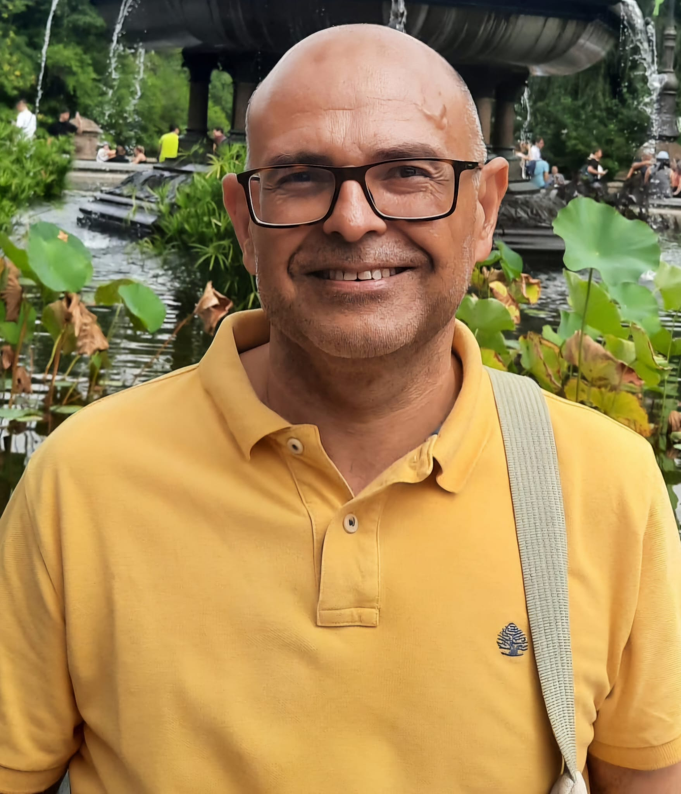

Context
Oceanic internal waves (IWs) propagate within the ocean when it is stratified and disturbed by physical mechanisms. These waves, typically nonlinear (Internal Solitary Waves – ISWs), can reach amplitudes of over 100 meters. They generate the highest vertical velocities in the ocean and strong horizontal shear currents, often causing underwater navigation accidents and damaging sea platforms (Osborne and Burch 1980). Furthermore, ISWs resuspend sediments over the continental shelf (Quaresma et al. 2007) and can produce intense mixing in the deep ocean. IWs can be detected by remote sensing satellites through variations in sea surface roughness, observable with optical and radar sensors (Magalhaes and da Silva 2017; Zhang et al. 2020; Santos-Ferreira et al. 2018, 2019, 2022, 2023). However, the most effective method for observing IWs across the global ocean is using SAR imaging, as the Sentinel-1 images used in this service (due e.g. to the cloud contamination in case of the optical images).
The “Internal Waves Service” provides near real-time updates by mapping detected events on an interactive platform, highlighting locations where internal waves are observed. Leveraging a pre-trained model on similar datasets, the service analyses thousands of images from the Sentinel-1 satellite (WV mode vignettes). This innovative service generates global maps, offering valuable insights into the distribution of internal waves worldwide, except in regions where such imagery is unavailable.About Internal Waves Service
This service sources all Copernicus Sentinel 1 WV mode vignettes SAR (Synthetic Aperture RADAR) images (imagettes) and classifies them according to wether or not they depict an internal wave. It proceeds to store the positive images on S3 and their metadata on SQL a database for efficient retrieval.
- Data Acquisition and Processing: The system continuously ingests Sentinel-1 WV mode vignettes from global acquisitions. The images were sourced from IFREMER X-Waves.
- Machine Learning Classification: Employs a state-of-the-art machine learning model to classify each vignette, determining the presence or absence of internal waves. The model is trained on a diverse dataset of imagettes of different oceans featuring various oceanic conditions.
- Data Management: Positive detections: Vignettes classified as containing internal waves are stored in S3 object storage for efficient retrieval and further analysis. Comprehensive metadata for all processed vignettes, including classification results, acquisition details, and geolocation information, is stored in a SQL database.
- Key Features: The system provides global coverage by analyzing Sentinel-1 WV mode data from all ocean basins worldwide. It supports near real-time processing by rapidly ingesting and processing new acquisitions to maintain an up-to-date dataset. Efficient retrieval is ensured through an optimized database schema and object storage integration, enabling quick access to classified imagery and associated metadata. Designed for scalability, the system handles the high volume of Sentinel-1 WV mode acquisitions, which can reach up to 75 minutes per orbit, with the potential to incorporate data from other satellites in the future. This service provides researchers and oceanographers with a powerful tool for studying internal wave phenomena on a global scale, leveraging the unique capabilities of Sentinel-1’s Wave mode acquisitions.
Program
Day 1 - Thursday 03.04.2025
Timezone: UTC -1; GMT-1
09:00 – 9:15 Welcome speech and program presentation. Mr. João Pinelo
09:15 – 9:30 Science-based cooperation driven towards citizens. AIR Centre presentation. Mr. Miguel Miranda
09:30 – 10:00 The Internal Waves Service: What We've Built So Far. Ms. Adriana Ferreira, Mr. Iúri Diogo & Mr. João Gonçalves
10:00 – 10:20 Coffe Break.
10:20 – 10:50 Internal Solitary-like Waves within the Pacific Cold Tongue: generation mechanisms, longevity and wider significance. Mr. José da Silva
10:50 – 11:20 SAR future mission for oceanography. Mr. Bertrand Chapron
11:20 – 11:50 Advances in the theory and methodology of SAR Oceanography. Mr. Johnny Johannessen
12:00 – 13:00 Lunch break.
13:00 – 13:15 Automatic Identification of Internal Waves. Kaggle competition. Mr. Gilberto Titericz
13:15 – 13:45 Project Spotlight. Mr. Maarten Buijsman
13:45 – 14:15 Internal Solitary Waves and the possibility of combined mixing with Wind-induced surface mixed layer. Mr. Jorge Magalhães
14:15 – 14:45 SeaSTAR and SWOT missions to Observe Fine-Scale Ocean Surface Dynamics. Ms. Christine Gommenginger
14:45 – 15:15 Small-scale coastal surface convergences: accumulation of larvae and other zooplankton. Mr. Jesús Pineda
15:15 – 15:35 Coffe Break.
15:35 – 16:05 Internal Wave signature in ocean observations and high-resolution models. Mr. Gaël Forget
16:05 – 16:35 Progress toward a deep learning-based submesoscale eddy detection service on NASA PO.DAAC. Mr. Edwin Goh
16:35 – 17:00 Reflections on the Day.
18:00 – 20:00 Networking Cocktail.
Day 2 - Friday 4.04.2025
Timezone: UTC -1; GMT-1
09:00 – 10:00 Round Table: Defining objectives.
10:00 – 10:20 Coffe Break.
10:20 – 11:10 Round Table: Dataset validation.
11:10 – 11:35 Round Table: Publications.
11:35 – 12:00 Round Table: Funding opportunities.
Speakers
A limited number of expert scientists and key stakeholders have been invited to participate in the Internal Waves Service Workshop. The selected speakers represent the ocean submesoscale and internal waves community, spanning various fields such as mathematics, modeling, and remote sensing. All of them are experts in this ocean phenomenon, and their knowledge across these diverse areas will be invaluable in enhancing this service. Additionally, a small group of scientists from the AIR Centre, or those associated with its activities, will also take part in the workshop.
Confirmed Speakers (alphabetically)
Adriana Ferreira
Adriana Ferreira recently joined the AIR Centre as a Marine Applications Developer, following the completion of her PhD in Surveying Engineering at the Faculty of Sciences, University of Porto. Her work has primarily focused on ocean applications, with particular expertise in submesoscale processes, such as short-period internal waves. Adriana’s research combines satellite observations, in situ data, oceanographic models, and, more recently, machine learning techniques to advance understanding in this field.
Bertrand Chapron

Bertrand Chapron (Ifremer/LOPS, Odyssey group) Senior scientist, first class research director, at Ifremer, has multi-year experience on the combined use of space-borne ocean remote sensing active and passive measurements. Chapron served as co- and/or principal investigator in several ESA projects (SMOS salinity mission, OceanGasFlux, SMOS-Storm, GlobCurrent, DTEp, MAXSS). He is a member of the NASA and CNES science and definition team for the future SWOT high-resolution ocean topography mission (launch 2022), and CFOSAT ocean wave and wind measurements (launch Oct. 2018). Over the last years, Chapron and collaborators further works on the definition of future space-borne instruments, more directly dedicated to estimate ocean surface currents and/or upper ocean deformation field (surface current gradients): the ESA Earth Explorer 9 Doppler off-nadir altimeter SKIM (Ardhuin et al., 2018), the ESA Earth Explorer 10 bi-static SAR measurements HRMNY (Dekker-Lopez et al., 2018). Other concepts include multi-azimuth optical sensor GLISTERO-SARONG and multi-azimuth multi-polarized radar sensor (SEASTAR, Gommenginger and Chapron, 2018), and NASA Ka-band Doppler- scatterometer (Rodriguez et al., 2018).
Christine Gommenginger
Christine has over 25 years experience in ocean remote sensing and physical oceanography. Her research explores how microwave electromagnetic signals interact with the ocean to develop new and improved satellite-based ocean measurements, products, applications, services, sensors and missions. Her pioneering work led to new spaceborne observations of ocean wave period, coastal sea level and wave height, ocean winds and total surface currents in the open ocean and the coastal zone. She has an established international reputation in satellite altimetry, SAR interferometry, GNSS-Reflectometry and L-band radiometry. Scientific interests include atmosphere-ocean exchanges, current/wind/wave interactions, submesoscale dynamics and long-term variability and trends of key ocean ECVs, notably sea state and sea level. Christine is a promoter and proposer of innovative Earth Observation technology and new satellite missions, working extensively with private stakeholders in the space sector. She frequently works also with end-users in operational agencies, government and the commercial sector to support greater understanding and uptake of marine Earth Observation capabilities. Christine is Principal Investigator of the SEASTAR Earth Explorer mission concept, heading an international science team of 70+ scientists and engineers to deliver new high-accuracy wide-swath images of total ocean surface current and wind vectors at 1km resolution. She is a member of the SWOT science team, PI of the CNES-approved SWOT VORTICES project, and PI of the SWOT-UK project funded by NERC and the UK Space Agency. Christine serves on many national and international Earth Observation advisory boards for the European Space Agency, the UK Space Agency and Copernicus. She currently chairs the International Science Board of the National Centre for Earth Observation. She co-proposed and co-manages the NERC Centre for Doctoral Training for Satellite Data in Environmental Science (SENSE) in partnership with Universities of Leeds, Edinburgh and British Antarctic Survey.
Edwin Goh
Edwin Goh received the B.S., M.S., and Ph.D. degrees in aerospace engineering from Georgia Institute of Technology, Atlanta, GA, USA, in 2015, 2018, and 2020, respectively. He is currently a Data Scientist with the Jet Propulsion Laboratory, California Institute of Technology, Pasadena, CA, USA. His research focuses on the application of machine learning to enable data-driven design, optimization, and operation of aerospace systems. His work includes deep space network (DSN) scheduling using reinforcement learning, automated machine learning systems, and self-supervised computer vision for planetary and Earth science.
Gaël Forget
Gaël works as a reseach scientist at the Massachusetts Institute of Technology (MIT) where he investigates oceanography and climate. As part of the Department of Earth, Atmospheric and Planetary Sciences, his work focuses on ocean modeling and the analysis of global ocean data sets such as Argo profile collections and satellite altimetry. Amongst other approaches, he carries out ocean state estimation using the MIT general circulation model to interpolate and interpret ocean observations. He also participates in the development of the MITgcm and in the NASA Sea Level Change Team activities. His scientific interests include: Ocean circulation and Climate variability; tracer transport and turbulent transformation processes; interaction of bio-geochemistry and physical processes; global cycles of heat, water, and carbon; observational statistics; forward and inverse modeling.
Gilberto Titericz
Gilberto is a data scientist on the RAPIDS team at NVIDIA and a Kaggle grandmaster.
Iúri Diogo

Iúri holds a MSc in Geographic Information Systems and Spatial Modeling from the Institute of Geography and Spatial Planning (IGOT-UL). He is currently an intern at the AIR Centre, where he focuses on the use of deep learning and the Julia programming language to develop artificial intelligence algorithms.
Jesús Pineda
Jesus Pineda is a researcher at the Department of Biology at the Woods Hole Oceanographic Institution (WHOI). He leads the Benthic Ecology and Nearshore Oceanography Lab (BENOL), which focuses on nearshore and coastal ecology, larval ecology, larval transport and dispersal, population ecology, and large-scale ecology. His research explores the distribution and abundance of benthic organisms, investigating the environmental factors that shape these patterns. His work spans temperate and tropical environments, contributing to a deeper understanding of coastal ecosystem dynamics and larval connectivity.
João Gonçalves
João Gonçalves is a tech enthusiast with over a decade of hands-on experience in software engineering and IT ops. A Linux power user, network tinkerer, and software craftsman, he loves nothing more than diving into complex systems and making them run smoother, faster, and smarter. Currently at AIR Centre, João is immersed in the exciting world of high-performance computing (HPC), where he maintains a cutting-edge HPC datacenter, develops innovative software solutions and contributes to impactful projects.
João Pinelo

João Pinelo is the Head of Data Science, Cloud Infrastructure and Development at the Atlantic International Research Centre. He has been at the Earth Observation Lab (AIR Centre) - a laboratory of the European Space Agency (ESA) - since 2020, where he is responsible for founding and organising JuliaEO (Global Workshop on Earth Observation with Julia) - editions: 2023, 24, 25; Senior project manager for building and setting up a data centre; Define and manage systems’ architectures for networking, storage and computation of the datacentre, which he set up as a hybrid cloud. He has been responsible for many other projects and developed several real-time web applications for EO data and alert systems. He is the architectiof the IoT network of the Azores, the Atlantic Cloud and the Internal Waves Service, among other.
Johnny Johannessen

Johnny A. Johannessen has 40 years of experience in satellite remote sensing in oceanography and sea ice research. In particular, he has focused on the use of satellites to advance the understanding of mesoscale processes and currents, upper ocean dynamics and air-sea-ice interaction associated with ocean fronts and eddies, both in the open ocean and along the marginal ice zone. He has also been involved in development and implementation of operational oceanography at national and international level. This has included a central role in the transition from the Framework Program in EU to the operation of the Copernicus Marine Environmental Monitoring Service (CMEMS). Johannessen has been a member of several ESA mission advisory groups. He chaired ESA´s Science Advisory Committee from 2006 to 2010 and ESA EOEP5/FutureEO Segment-1 Science Review Panel (2021-2022). He is a member of the board of Mercator Ocean International and the GCOS Steering Committee.
Jorge Magalhães
Jorge Magalhães graduated in Oceanography in 2005 from the University of Lisbon and completed his Ph.D. in internal waves in 2012 from the University of Porto. Main research interests include satellite imaging of sea surface processes, including internal waves, near-shore phenomena such as RIP currents, river plumes, and thermal fronts. Recent research includes developing software for satellite SAR and altimetry processing, global ocean modelling (e.g. HYCOM), as well as high resolution numerical modelling (e.g. using the MITgcm) for accurate representations of internal wave dynamics and their interactions with other processes.
José da Silva
José C.B. da Silva has more than 30 years of experience in Satellite Oceanography and holds a Doctor of Philosophy in Oceanography (1997) at the University of Southampton (National Oceanography Centre, Southampton, U.K.). José is interested in all kinds of Remote Sensing techniques to observe ocean internal waves and small-scale phenomena in the upper ocean. His research work combines observations, numerical modelling and theoretical grounds to investigate the generation, propagation, interaction and dissipation of internal solitary waves. He holds a first degree in Physics/Applied Mathematics (Astrophysics) at the University of Porto, and a M.Sc. in Remote Sensing, Image Processing and Applications, at the University of Dundee, Scotland. He was Lecturer at the University of Lisbon (Physics Department) and is Associate Professor at University of Porto (Departamento de Geociências, Ambiente e Ordenamento do Território) since 2010. José is also a guest investigator at the Woods Hole Oceanographic Institution since 2007. José da Silva has been Principal Investigator and participated in many national and international projects. José was a PI for the ERS SAR and ENVISAT missions as well as TerraSAR-X missions. He has supervised 5 post-docs and 6 PhD students and has published more than 60 peer reviewed ISI indexed journal articles, many book chapters and many other ISI indexed publications. His research has significantly shaped the study of internal waves through the use of remote sensing techniques.
Maarten Buijsman

Associate Professor Maarten Buijsman, of The University of Southern Mississippi’s Division of Marine Science, is part of a large team that is funded by the National Oceanographic Partnership Program that studies the characteristics of subsurface waves that have propagated along the density layers across the Pacific Ocean to the U.S. West Coast. These internal waves, generated near Hawaii due to tidal motions over topography, may be relevant for water mass mixing in coastal shelf areas, affecting the coastal circulation and biogeochemistry.
FAQ
- Is there a fee to attend the workshop? No.
- Do I need to register to attend the workshop?
No, this is an invitation-only event. If you (or your institution) received an invitation, please email adriana.ferreira@aircentre.org to confirm your attendance. If you have not received an invitation but are interested in participating, please send a brief statement of interest to the same email address for consideration.
- Does the AIR Centre provide transfers between the airport and the hotel? Yes, but only for the speakers on Terceira Island.
Location
Invited speakers will also be accommodated at the same hotel as the event (Terceira Mar Hotel).
Other participants who wish to stay at the hotel shall mention the event to get special pricing.
Organizing Committee
-
João Pinelo (AIR Centre), Adriana Ferreira (AIR Centre), José da Silva (University of Porto), Bertrand Chapron (IFREMER) and Johnny A. Johannessen (NERSC)
Sponsors
Partners